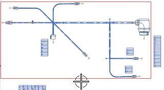

Once the pin listings are placed on the drawing sheet, they are fine as long as you don’t move the formboard view. However, if you move the formboard view somewhere else on the drawing sheet, or to a different drawing sheet altogether, the pin listings will not move with the view. To prevent that from happening, you need to associate them with the view.
Move your cursor over the origin of a pin listing, then right–click it and choose Associate to View.
Select the boundary of the view.

Repeat for the other pin listings.
You can use the same command to associate the cut sheet to the formboard view.